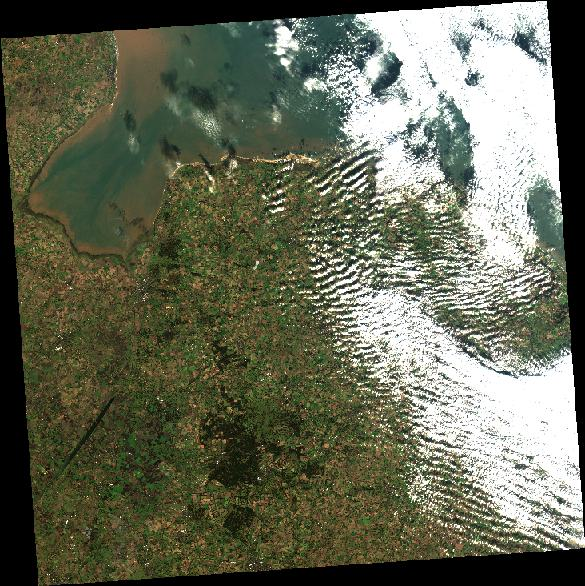

# If needed you can install a package in the current AppHub Jupyter environment using pip
# For instance, we will need at least the following libraries
import sys
!{sys.executable} -m pip install --upgrade pyeodh geopandas shapely matplotlib numpy pillow foliumNOTE
- Check you can login and see a workspace
- Find data using the web interface
- Use notebook to find data using pyeodh - everyone needs access to the AppHub
- Data visualisation - titiler and other (Daniel W helping)
Pathfinder Phase Workshop: Finding Data
Description & purpose: This Notebook is designed to showcase the functionality of the Earth Observation Data Hub (EODH) as the project approaches the end of the Pathfinder Phase. It provides a snapshot of the Hub, the pyeodh API client and the various datasets as of February 2025.
Author(s): Alastair Graham, Dusan Figala
Date created: 2025-02-18
Date last modified: 2025-02-19
Licence: This notebook is licensed under Creative Commons Attribution-ShareAlike 4.0 International. The code is released using the BSD-2-Clause license.
Copyright (c) , All rights reserved.
Redistribution and use in source and binary forms, with or without modification, are permitted provided that the following conditions are met:
Redistributions of source code must retain the above copyright notice, this list of conditions and the following disclaimer. Redistributions in binary form must reproduce the above copyright notice, this list of conditions and the following disclaimer in the documentation and/or other materials provided with the distribution. THIS SOFTWARE IS PROVIDED BY THE COPYRIGHT HOLDERS AND CONTRIBUTORS “AS IS” AND ANY EXPRESS OR IMPLIED WARRANTIES, INCLUDING, BUT NOT LIMITED TO, THE IMPLIED WARRANTIES OF MERCHANTABILITY AND FITNESS FOR A PARTICULAR PURPOSE ARE DISCLAIMED. IN NO EVENT SHALL THE COPYRIGHT HOLDER OR CONTRIBUTORS BE LIABLE FOR ANY DIRECT, INDIRECT, INCIDENTAL, SPECIAL, EXEMPLARY, OR CONSEQUENTIAL DAMAGES (INCLUDING, BUT NOT LIMITED TO, PROCUREMENT OF SUBSTITUTE GOODS OR SERVICES; LOSS OF USE, DATA, OR PROFITS; OR BUSINESS INTERRUPTION) HOWEVER CAUSED AND ON ANY THEORY OF LIABILITY, WHETHER IN CONTRACT, STRICT LIABILITY, OR TORT (INCLUDING NEGLIGENCE OR OTHERWISE) ARISING IN ANY WAY OUT OF THE USE OF THIS SOFTWARE, EVEN IF ADVISED OF THE POSSIBILITY OF SUCH DAMAGE.
Visual data discovery
The first thing to do is find some data. Initially we will be using the current Catalogue User Interface (Note: a replacement user interface is in development, as demonstrated in the Workshop). There are two initial tasks that you will need to complete to find some data. First, using the tool shown in the image below on the right-hand side of the map pane, draw an area of interest (AOI) roughly in the region of Thetford. The Image shows an example of such an AOI as an orange outline. The other task is to navigate through the floating pane shown to the left in the image below to find Supported Datasets > CEDA STAC API > Sentinel 2 ARD

Once you have entered the Sentinel 2 ARD collection, you should see a list of images related to the AOI. Somewhere near the top of the list will be the image that we are looking for. It is shown as the third from top in the list in the image below. The item name will contain the following information, so look for this
- date:
2023-11-17 - orbit:
ORB137 - projection:
utm31n_osgb - location code:
T31UCU

Click on the relevant item to find the assets within it. There are a number of assets (data layers, metadata, thumbnail etc.) within the item. Take some time to investigate what exists. The two we are interested in here are thumbnail and cog (the cog holds the image data). The image below shows how to copy the URL to the COG data: either using the button on the left or copying the path in the text box on the right.

Check that you have found the datset we are interested in:
- Thumbnail: https://dap.ceda.ac.uk/neodc/sentinel_ard/data/sentinel_2/2023/11/17/S2A_20231117_latn527lone0008_T30UYD_ORB137_20231117131218_utm30n_osgb_vmsk_sharp_rad_srefdem_stdsref_thumbnail.jpg (you can open this in a web browser and it should look like the image below)
- Dataset: https://dap.ceda.ac.uk/neodc/sentinel_ard/data/sentinel_2/2023/11/17/S2A_20231117_latn527lone0008_T30UYD_ORB137_20231117131218_utm30n_osgb_vmsk_sharp_rad_srefdem_stdsref.tif

Take some time to click around the listed datasets to see what is included and accessible.
Note that not all collections contain items.
Coded data discovery
There are a number of API endpoints that are exposed by the EODH. Oxidian have developed a Python API Client, pyeodh, that makes the Hub’s API endpoints available to Python users. pyeodh is available on PyPi (https://pypi.org/project/pyeodh/) and can be installed using pip. Documentation for the API Client is available at: https://pyeodh.readthedocs.io/en/latest/api.html
We will use pyeodh throughout this workshop.
Presentation set up
The following cell only needs to be run on the EODH AppHub. If you have a local Python environment running, please install the required packages as you would normally e.g. using mamba, poetry etc.
# Imports
import pyeodh
import shapely as sh
import geopandas as gpd
import folium
import urllib.request
from io import BytesIO
from PIL import ImageHaving imported the necessary libraries the next task is to set up the locations of the areas of interest. Having created the AOI points the user needs to connect to the Resource Catalogue so that they can start to find some data.
# Areas of Interest
thet_pnt = sh.Point(0.6715892933273722, 52.414471075812315) # a site near Thetford# Optional cell
# If you want to see these points on a map run this cell
# You may need to run the notebook through a service such as nbviewer: https://nbviewer.org/
# Create a map (m) centered on the point
center_lat = (thet_pnt.y)
center_lon = (thet_pnt.x)
m = folium.Map(location=[center_lat, center_lon], zoom_start=10)
# Add markers for the point
folium.Marker([thet_pnt.y, thet_pnt.x], popup="Thetford Site", icon=folium.Icon(color="green")).add_to(m)
# Step 4: Display the map
mMake this Notebook Trusted to load map: File -> Trust Notebook
# Connect to the Hub
# base_url can be changed to optionally specify a different server, such as test.eodatahub
client = pyeodh.Client(
base_url="https://staging.eodatahub.org.uk"
).get_catalog_service()# Print a list of the collections held in the Resource Catalogue (their id and description).
# As the Resource Catalogue fills and development continues, the number of collections and the richness of their descriptions will increase
for index, collect in enumerate(client.get_collections(), start=1):
print(f"{index} -- {collect.id}: {collect.description}")1 -- ukcp: Regional climate model projections produced as part of the UK Climate Projection 2018 (UKCP18) project. The data produced by the Met Office Hadley Centre provides information on changes in climate for the UK until 2080, downscaled to a high resolution (12km), helping to inform adaptation to a changing climate. The projections cover Europe and a 100 year period, 1981-2080, for a high emissions scenario, RCP8.5. Each projection provides an example of climate variability in a changing climate, which is consistent across climate variables at different times and spatial locations. This dataset contains 12km data for the United Kingdom, the Isle of Man and the Channel Islands provided on the Ordnance Survey's British National Grid.
2 -- sentinel2_ard: These data have been created by the Department for Environment, Food and Rural Affairs (Defra) and Joint Nature Conservation Committee (JNCC) in order to cost-effectively provide high quality, Analysis Ready Data (ARD) for a wide range of applications. The dataset contains modified Copernicus Sentinel-2 (Level 1C data processed into a surface reflectance product using ARCSI software (Level 2)).
3 -- sentinel1: This dataset contains level 1 Interferometric Wide swath (IW) Single Look Complex (SLC) C-band Synthetic Aperture Radar (SAR) data from the European Space Agency (ESA) Sentinel 1 series satellites. Sentinel 1 satellites provide continuous all-weather, day and night imaging radar data. The IW mode is the main operational mode. The IW mode supports single (HH or VV) and dual (HH+HV or VV+VH) polarisation.
4 -- land_cover: As part of the ESA Land Cover Climate Change Initiative (CCI) project a new set of Global Land Cover Maps have been produced. These maps are available at 300m spatial resolution for each year between 1992 and 2015. Each pixel value corresponds to the classification of a land cover class defined based on the UN Land Cover Classification System (LCCS). The reliability of the classifications made are documented by the four quality flags (decribed further in the Product User Guide) that accompany these maps. Data are provided in both NetCDF and GeoTiff format.
5 -- eocis-sst-cdrv3-climatology: ESA SST CCI Climatology v3.0
6 -- eocis-sst-cdrv3: This dataset provides daily estimates of global sea surface temperature (SST) based on observations from multiple satellite sensors. Resolution: 5km. Available from 1980 onwards.
7 -- eocis-lst-s3b-night: This collection contains datasets of level L3C global land surface temperature from the SLSTR sensor on board Sentinel 3B observed daily during nighttime. The collection is available from 2018-11-17.
8 -- eocis-lst-s3b-day: This collection contains datasets of level L3C global land surface temperature from the SLSTR sensor on board Sentinel 3B observed daily during daytime. The collection is available from 2018-11-17.
9 -- eocis-lst-s3a-night: This collection contains datasets of level L3C global land surface temperature from the SLSTR sensor on board Sentinel 3A observed daily during nighttime. The collection is available from 2016-05-01.
10 -- eocis-lst-s3a-day: This collection contains datasets of level L3C global land surface temperature from the SLSTR sensor on board Sentinel 3A observed daily during daytime. The collection is available from 2016-05-01.The dataset that we are interested in for the purposes of this workshop is sentinel2_ard. As seen from the output from the previous cell, we can see that the description of the dataset is as follows:
These data have been created by the Department for Environment, Food and Rural Affairs (Defra) and Joint Nature Conservation Committee (JNCC) in order to cost-effectively provide high quality, Analysis Ready Data (ARD) for a wide range of applications. The dataset contains modified Copernicus Sentinel-2 (Level 1C data processed into a surface reflectance product using ARCSI software (Level 2)).
# The next thing to do is find some open data
# For this workshop we want to find Sentinel-2 analysis ready (ARD) imagery near Thetford
# First we just want to understand the timespan of the dataset which is reported from the STAC collection record
sentinel2_ard = client.get_catalog("supported-datasets/catalogs/ceda-stac-catalogue").get_collection('sentinel2_ard')
sentinel2_ard.get_items()
print('DATASET TEMPORAL EXTENT: ', [str(d) for d in sentinel2_ard.extent.temporal.intervals[0]])DATASET TEMPORAL EXTENT: ['2023-01-01 11:14:51+00:00', '2023-11-01 11:43:49+00:00']# Now we want to access the first few items and see what they are called, when the image was collected and how much cloud there is
lim = 10
for i, item in enumerate(sentinel2_ard.get_items()):
if i >= lim:
break
print(item.id, item.properties['datetime'], item.properties['eo:cloud_cover'])neodc.sentinel_ard.data.sentinel_2.2023.11.21.S2B_20231121_latn536lonw0052_T30UUE_ORB123_20231121122846_utm30n_TM65 2023-11-21T11:43:49Z 67.568010963291
neodc.sentinel_ard.data.sentinel_2.2023.11.20.S2A_20231120_latn563lonw0037_T30VVH_ORB037_20231120132420_utm30n_osgb 2023-11-20T11:23:51Z 17.320411981252
neodc.sentinel_ard.data.sentinel_2.2023.11.20.S2A_20231120_latn546lonw0037_T30UVF_ORB037_20231120132420_utm30n_osgb 2023-11-20T11:23:51Z 37.725362031379
neodc.sentinel_ard.data.sentinel_2.2023.11.20.S2A_20231120_latn536lonw0007_T30UXE_ORB037_20231120132420_utm30n_osgb 2023-11-20T11:23:51Z 20.866700948979
neodc.sentinel_ard.data.sentinel_2.2023.11.20.S2A_20231120_latn528lonw0022_T30UWD_ORB037_20231120132420_utm30n_osgb 2023-11-20T11:23:51Z 44.517572934396
neodc.sentinel_ard.data.sentinel_2.2023.11.20.S2A_20231120_latn527lonw0007_T30UXD_ORB037_20231120132420_utm30n_osgb 2023-11-20T11:23:51Z 5.880352134231
neodc.sentinel_ard.data.sentinel_2.2023.11.20.S2A_20231120_latn519lonw0037_T30UVC_ORB037_20231120132420_utm30n_osgb 2023-11-20T11:23:51Z 61.069157036639
neodc.sentinel_ard.data.sentinel_2.2023.11.20.S2A_20231120_latn519lonw0022_T30UWC_ORB037_20231120132420_utm30n_osgb 2023-11-20T11:23:51Z 19.243094747529
neodc.sentinel_ard.data.sentinel_2.2023.11.20.S2A_20231120_latn518lonw0008_T30UXC_ORB037_20231120132420_utm30n_osgb 2023-11-20T11:23:51Z 21.15911075158
neodc.sentinel_ard.data.sentinel_2.2023.11.20.S2A_20231120_latn510lonw0036_T30UVB_ORB037_20231120132420_utm30n_osgb 2023-11-20T11:23:51Z 31.848935471349The previous cell shows us that we are able to access Sentinel 2 ARD data and find out a number of bits of information about the item. If you are interested in seeing what other information is accessible, have a look at the
- collection endpoint: https://staging.eodatahub.org.uk/api/catalogue/stac/catalogs/supported-datasets/catalogs/ceda-stac-catalogue/collections/sentinel2_ard
- items endpoint: https://staging.eodatahub.org.uk/api/catalogue/stac/catalogs/supported-datasets/catalogs/ceda-stac-catalogue/collections/sentinel2_ard/items
# To find out information about all the imagery in the collection then use this cell
# It undertakes a search for specific date ranges (November 2023) and limits the pagination return to 10
item_search = client.search(
collections=['sentinel2_ard'],
catalog_paths=["supported-datasets/catalogs/ceda-stac-catalogue"],
query=[
'start_datetime>=2023-11-01',
'end_datetime<=2023-11-30',
],
limit=10,
)
# The item id and start time of image capture can be printed
# If end time is also required, add the following code to the print statement: item.properties["end_datetime"]
for item in item_search:
print(item.id)#, item.properties["start_datetime"])neodc.sentinel_ard.data.sentinel_2.2023.11.21.S2B_20231121_latn536lonw0052_T30UUE_ORB123_20231121122846_utm30n_TM65
neodc.sentinel_ard.data.sentinel_2.2023.11.20.S2A_20231120_latn563lonw0037_T30VVH_ORB037_20231120132420_utm30n_osgb
neodc.sentinel_ard.data.sentinel_2.2023.11.20.S2A_20231120_latn546lonw0037_T30UVF_ORB037_20231120132420_utm30n_osgb
neodc.sentinel_ard.data.sentinel_2.2023.11.20.S2A_20231120_latn536lonw0007_T30UXE_ORB037_20231120132420_utm30n_osgb
neodc.sentinel_ard.data.sentinel_2.2023.11.20.S2A_20231120_latn528lonw0022_T30UWD_ORB037_20231120132420_utm30n_osgb
neodc.sentinel_ard.data.sentinel_2.2023.11.20.S2A_20231120_latn527lonw0007_T30UXD_ORB037_20231120132420_utm30n_osgb
neodc.sentinel_ard.data.sentinel_2.2023.11.20.S2A_20231120_latn519lonw0037_T30UVC_ORB037_20231120132420_utm30n_osgb
neodc.sentinel_ard.data.sentinel_2.2023.11.20.S2A_20231120_latn519lonw0022_T30UWC_ORB037_20231120132420_utm30n_osgb
neodc.sentinel_ard.data.sentinel_2.2023.11.20.S2A_20231120_latn518lonw0008_T30UXC_ORB037_20231120132420_utm30n_osgb
neodc.sentinel_ard.data.sentinel_2.2023.11.20.S2A_20231120_latn510lonw0036_T30UVB_ORB037_20231120132420_utm30n_osgb
neodc.sentinel_ard.data.sentinel_2.2023.11.20.S2A_20231120_latn510lonw0022_T30UWB_ORB037_20231120132420_utm30n_osgb
neodc.sentinel_ard.data.sentinel_2.2023.11.20.S2A_20231120_latn501lonw0036_T30UVA_ORB037_20231120132420_utm30n_osgb
neodc.sentinel_ard.data.sentinel_2.2023.11.20.S2A_20231120_latn500lonw0050_T30UUA_ORB037_20231120132420_utm30n_osgb
neodc.sentinel_ard.data.sentinel_2.2023.11.19.S2A_20231119_latn590lonw0063_T29VPF_ORB023_20231119135216_utm29n_osgb
neodc.sentinel_ard.data.sentinel_2.2023.11.19.S2A_20231119_latn590lonw0055_T30VUL_ORB023_20231119135216_utm30n_osgb
neodc.sentinel_ard.data.sentinel_2.2023.11.19.S2A_20231119_latn581lonw0081_T29VNE_ORB023_20231119135216_utm29n_osgb
neodc.sentinel_ard.data.sentinel_2.2023.11.19.S2A_20231119_latn581lonw0064_T29VPE_ORB023_20231119135216_utm29n_osgb
neodc.sentinel_ard.data.sentinel_2.2023.11.19.S2A_20231119_latn581lonw0055_T30VUK_ORB023_20231119135216_utm30n_osgb
neodc.sentinel_ard.data.sentinel_2.2023.11.19.S2A_20231119_latn572lonw0081_T29VND_ORB023_20231119135216_utm29n_osgb
neodc.sentinel_ard.data.sentinel_2.2023.11.19.S2A_20231119_latn572lonw0064_T29VPD_ORB023_20231119135216_utm29n_osgb
neodc.sentinel_ard.data.sentinel_2.2023.11.19.S2A_20231119_latn572lonw0054_T30VUJ_ORB023_20231119135216_utm30n_osgb
neodc.sentinel_ard.data.sentinel_2.2023.11.19.S2A_20231119_latn554lonw0081_T29UNB_ORB023_20231119135216_utm29n_TM65
neodc.sentinel_ard.data.sentinel_2.2023.11.19.S2B_20231119_latn536lone0009_T30UYE_ORB094_20231119115015_utm30n_osgb
neodc.sentinel_ard.data.sentinel_2.2023.11.19.S2B_20231119_latn536lone0008_T31UCV_ORB094_20231119115015_utm31n_osgb
neodc.sentinel_ard.data.sentinel_2.2023.11.19.S2B_20231119_latn528lone0023_T31UDU_ORB094_20231119115015_utm31n_osgb
neodc.sentinel_ard.data.sentinel_2.2023.11.19.S2B_20231119_latn519lone0023_T31UDT_ORB094_20231119115015_utm31n_osgb
neodc.sentinel_ard.data.sentinel_2.2023.11.19.S2B_20231119_latn518lone0009_T31UCT_ORB094_20231119115015_utm31n_osgb
neodc.sentinel_ard.data.sentinel_2.2023.11.19.S2B_20231119_latn518lone0007_T30UYC_ORB094_20231119115015_utm30n_osgb
neodc.sentinel_ard.data.sentinel_2.2023.11.19.S2B_20231119_latn509lonw0008_T30UXB_ORB094_20231119115015_utm30n_osgb
neodc.sentinel_ard.data.sentinel_2.2023.11.19.S2B_20231119_latn509lone0009_T31UCS_ORB094_20231119115015_utm31n_osgb
neodc.sentinel_ard.data.sentinel_2.2023.11.19.S2B_20231119_latn509lone0006_T30UYB_ORB094_20231119115015_utm30n_osgb
neodc.sentinel_ard.data.sentinel_2.2023.11.18.S2B_20231118_latn563lonw0065_T29VPC_ORB080_20231118122250_utm29n_osgb
neodc.sentinel_ard.data.sentinel_2.2023.11.18.S2B_20231118_latn563lonw0053_T30VUH_ORB080_20231118122250_utm30n_osgb
neodc.sentinel_ard.data.sentinel_2.2023.11.18.S2B_20231118_latn563lonw0037_T30VVH_ORB080_20231118122250_utm30n_osgb
neodc.sentinel_ard.data.sentinel_2.2023.11.18.S2B_20231118_latn554lonw0066_T29UPB_ORB080_20231118122250_utm29n_TM65
neodc.sentinel_ard.data.sentinel_2.2023.11.18.S2B_20231118_latn554lonw0053_T30UUG_ORB080_20231118122250_utm30n_osgb
neodc.sentinel_ard.data.sentinel_2.2023.11.18.S2B_20231118_latn554lonw0053_T30UUG_ORB080_20231118122250_utm30n_TM65
neodc.sentinel_ard.data.sentinel_2.2023.11.18.S2B_20231118_latn554lonw0021_T30UWG_ORB080_20231118122250_utm30n_osgb
neodc.sentinel_ard.data.sentinel_2.2023.11.18.S2B_20231118_latn546lonw0022_T30UWF_ORB080_20231118122250_utm30n_osgb
neodc.sentinel_ard.data.sentinel_2.2023.11.18.S2B_20231118_latn545lonw0066_T29UPA_ORB080_20231118122250_utm29n_TM65
neodc.sentinel_ard.data.sentinel_2.2023.11.18.S2B_20231118_latn545lonw0052_T30UUF_ORB080_20231118122250_utm30n_osgb
neodc.sentinel_ard.data.sentinel_2.2023.11.18.S2B_20231118_latn545lonw0052_T30UUF_ORB080_20231118122250_utm30n_TM65
neodc.sentinel_ard.data.sentinel_2.2023.11.17.S2B_20231117_latn581lonw0081_T29VNE_ORB066_20231117140404_utm29n_osgb
neodc.sentinel_ard.data.sentinel_2.2023.11.17.S2B_20231117_latn581lonw0064_T29VPE_ORB066_20231117140404_utm29n_osgb
neodc.sentinel_ard.data.sentinel_2.2023.11.17.S2A_20231117_latn554lonw0021_T30UWG_ORB137_20231117131218_utm30n_osgb
neodc.sentinel_ard.data.sentinel_2.2023.11.17.S2A_20231117_latn554lonw0006_T30UXG_ORB137_20231117131218_utm30n_osgb
neodc.sentinel_ard.data.sentinel_2.2023.11.17.S2A_20231117_latn546lonw0022_T30UWF_ORB137_20231117131218_utm30n_osgb
neodc.sentinel_ard.data.sentinel_2.2023.11.17.S2A_20231117_latn545lonw0006_T30UXF_ORB137_20231117131218_utm30n_osgb
neodc.sentinel_ard.data.sentinel_2.2023.11.17.S2A_20231117_latn537lonw0022_T30UWE_ORB137_20231117131218_utm30n_osgb
neodc.sentinel_ard.data.sentinel_2.2023.11.17.S2A_20231117_latn536lonw0007_T30UXE_ORB137_20231117131218_utm30n_osgb
neodc.sentinel_ard.data.sentinel_2.2023.11.17.S2A_20231117_latn536lone0009_T30UYE_ORB137_20231117131218_utm30n_osgb
neodc.sentinel_ard.data.sentinel_2.2023.11.17.S2A_20231117_latn536lone0008_T31UCV_ORB137_20231117131218_utm31n_osgb
neodc.sentinel_ard.data.sentinel_2.2023.11.17.S2A_20231117_latn528lonw0022_T30UWD_ORB137_20231117131218_utm30n_osgb
neodc.sentinel_ard.data.sentinel_2.2023.11.17.S2A_20231117_latn527lonw0007_T30UXD_ORB137_20231117131218_utm30n_osgb
neodc.sentinel_ard.data.sentinel_2.2023.11.17.S2A_20231117_latn527lone0009_T31UCU_ORB137_20231117131218_utm31n_osgb
neodc.sentinel_ard.data.sentinel_2.2023.11.17.S2A_20231117_latn527lone0008_T30UYD_ORB137_20231117131218_utm30n_osgb
neodc.sentinel_ard.data.sentinel_2.2023.11.17.S2A_20231117_latn519lonw0037_T30UVC_ORB137_20231117131218_utm30n_osgb
neodc.sentinel_ard.data.sentinel_2.2023.11.17.S2A_20231117_latn519lonw0022_T30UWC_ORB137_20231117131218_utm30n_osgb
neodc.sentinel_ard.data.sentinel_2.2023.11.17.S2A_20231117_latn519lone0023_T31UDT_ORB137_20231117131218_utm31n_osgb
neodc.sentinel_ard.data.sentinel_2.2023.11.17.S2A_20231117_latn518lonw0008_T30UXC_ORB137_20231117131218_utm30n_osgb
neodc.sentinel_ard.data.sentinel_2.2023.11.17.S2A_20231117_latn518lone0009_T31UCT_ORB137_20231117131218_utm31n_osgb
neodc.sentinel_ard.data.sentinel_2.2023.11.17.S2A_20231117_latn518lone0007_T30UYC_ORB137_20231117131218_utm30n_osgb
neodc.sentinel_ard.data.sentinel_2.2023.11.17.S2A_20231117_latn510lonw0036_T30UVB_ORB137_20231117131218_utm30n_osgb
neodc.sentinel_ard.data.sentinel_2.2023.11.17.S2A_20231117_latn510lonw0022_T30UWB_ORB137_20231117131218_utm30n_osgb
neodc.sentinel_ard.data.sentinel_2.2023.11.17.S2A_20231117_latn509lonw0008_T30UXB_ORB137_20231117131218_utm30n_osgb
neodc.sentinel_ard.data.sentinel_2.2023.11.17.S2A_20231117_latn509lone0009_T31UCS_ORB137_20231117131218_utm31n_osgb
neodc.sentinel_ard.data.sentinel_2.2023.11.17.S2A_20231117_latn509lone0006_T30UYB_ORB137_20231117131218_utm30n_osgb
neodc.sentinel_ard.data.sentinel_2.2023.11.16.S2A_20231116_latn599lonw0020_T30VWM_ORB123_20231116134049_utm30n_osgb
neodc.sentinel_ard.data.sentinel_2.2023.11.16.S2A_20231116_latn599lonw0002_T30VXM_ORB123_20231116134049_utm30n_osgb
neodc.sentinel_ard.data.sentinel_2.2023.11.16.S2A_20231116_latn590lonw0063_T29VPF_ORB123_20231116134049_utm29n_osgb
neodc.sentinel_ard.data.sentinel_2.2023.11.16.S2A_20231116_latn590lonw0055_T30VUL_ORB123_20231116134049_utm30n_osgb
neodc.sentinel_ard.data.sentinel_2.2023.11.16.S2A_20231116_latn590lonw0038_T30VVL_ORB123_20231116134049_utm30n_osgb
neodc.sentinel_ard.data.sentinel_2.2023.11.16.S2A_20231116_latn590lonw0020_T30VWL_ORB123_20231116134049_utm30n_osgb
neodc.sentinel_ard.data.sentinel_2.2023.11.16.S2A_20231116_latn581lonw0064_T29VPE_ORB123_20231116134049_utm29n_osgb
neodc.sentinel_ard.data.sentinel_2.2023.11.16.S2A_20231116_latn581lonw0055_T30VUK_ORB123_20231116134049_utm30n_osgb
neodc.sentinel_ard.data.sentinel_2.2023.11.16.S2A_20231116_latn581lonw0038_T30VVK_ORB123_20231116134049_utm30n_osgb
neodc.sentinel_ard.data.sentinel_2.2023.11.16.S2A_20231116_latn572lonw0081_T29VND_ORB123_20231116134049_utm29n_osgb
neodc.sentinel_ard.data.sentinel_2.2023.11.16.S2A_20231116_latn572lonw0064_T29VPD_ORB123_20231116134049_utm29n_osgb
neodc.sentinel_ard.data.sentinel_2.2023.11.16.S2A_20231116_latn572lonw0054_T30VUJ_ORB123_20231116134049_utm30n_osgb
neodc.sentinel_ard.data.sentinel_2.2023.11.16.S2A_20231116_latn572lonw0037_T30VVJ_ORB123_20231116134049_utm30n_osgb
neodc.sentinel_ard.data.sentinel_2.2023.11.16.S2A_20231116_latn572lonw0021_T30VWJ_ORB123_20231116134049_utm30n_osgb
neodc.sentinel_ard.data.sentinel_2.2023.11.16.S2A_20231116_latn563lonw0065_T29VPC_ORB123_20231116134049_utm29n_osgb
neodc.sentinel_ard.data.sentinel_2.2023.11.16.S2A_20231116_latn563lonw0053_T30VUH_ORB123_20231116134049_utm30n_osgb
neodc.sentinel_ard.data.sentinel_2.2023.11.16.S2A_20231116_latn563lonw0037_T30VVH_ORB123_20231116134049_utm30n_osgb
neodc.sentinel_ard.data.sentinel_2.2023.11.16.S2A_20231116_latn555lonw0037_T30UVG_ORB123_20231116134049_utm30n_osgb
neodc.sentinel_ard.data.sentinel_2.2023.11.16.S2A_20231116_latn554lonw0081_T29UNB_ORB123_20231116134049_utm29n_TM65
neodc.sentinel_ard.data.sentinel_2.2023.11.16.S2A_20231116_latn554lonw0066_T29UPB_ORB123_20231116134049_utm29n_osgb
neodc.sentinel_ard.data.sentinel_2.2023.11.16.S2A_20231116_latn554lonw0066_T29UPB_ORB123_20231116134049_utm29n_TM65
neodc.sentinel_ard.data.sentinel_2.2023.11.16.S2A_20231116_latn554lonw0053_T30UUG_ORB123_20231116134049_utm30n_osgb
neodc.sentinel_ard.data.sentinel_2.2023.11.16.S2A_20231116_latn554lonw0053_T30UUG_ORB123_20231116134049_utm30n_TM65
neodc.sentinel_ard.data.sentinel_2.2023.11.15.S2B_20231115_latn608lonw0002_T30VXN_ORB037_20231115121328_utm30n_osgb
neodc.sentinel_ard.data.sentinel_2.2023.11.15.S2B_20231115_latn599lonw0020_T30VWM_ORB037_20231115121328_utm30n_osgb
neodc.sentinel_ard.data.sentinel_2.2023.11.15.S2B_20231115_latn599lonw0002_T30VXM_ORB037_20231115121328_utm30n_osgb
neodc.sentinel_ard.data.sentinel_2.2023.11.15.S2B_20231115_latn590lonw0020_T30VWL_ORB037_20231115121328_utm30n_osgb
neodc.sentinel_ard.data.sentinel_2.2023.11.15.S2B_20231115_latn572lonw0037_T30VVJ_ORB037_20231115121328_utm30n_osgb
neodc.sentinel_ard.data.sentinel_2.2023.11.15.S2B_20231115_latn572lonw0021_T30VWJ_ORB037_20231115121328_utm30n_osgb
neodc.sentinel_ard.data.sentinel_2.2023.11.15.S2B_20231115_latn554lonw0021_T30UWG_ORB037_20231115121328_utm30n_osgb
neodc.sentinel_ard.data.sentinel_2.2023.11.15.S2B_20231115_latn554lonw0006_T30UXG_ORB037_20231115121328_utm30n_osgb
neodc.sentinel_ard.data.sentinel_2.2023.11.15.S2B_20231115_latn546lonw0037_T30UVF_ORB037_20231115121328_utm30n_osgb
neodc.sentinel_ard.data.sentinel_2.2023.11.15.S2B_20231115_latn546lonw0022_T30UWF_ORB037_20231115121328_utm30n_osgb
neodc.sentinel_ard.data.sentinel_2.2023.11.15.S2B_20231115_latn545lonw0006_T30UXF_ORB037_20231115121328_utm30n_osgb
neodc.sentinel_ard.data.sentinel_2.2023.11.15.S2B_20231115_latn537lonw0037_T30UVE_ORB037_20231115121328_utm30n_osgb
neodc.sentinel_ard.data.sentinel_2.2023.11.15.S2B_20231115_latn536lonw0007_T30UXE_ORB037_20231115121328_utm30n_osgb
neodc.sentinel_ard.data.sentinel_2.2023.11.15.S2B_20231115_latn536lone0009_T30UYE_ORB037_20231115121328_utm30n_osgb
neodc.sentinel_ard.data.sentinel_2.2023.11.15.S2B_20231115_latn536lone0008_T31UCV_ORB037_20231115121328_utm31n_osgb
neodc.sentinel_ard.data.sentinel_2.2023.11.15.S2B_20231115_latn528lonw0037_T30UVD_ORB037_20231115121328_utm30n_osgb
neodc.sentinel_ard.data.sentinel_2.2023.11.15.S2B_20231115_latn528lonw0022_T30UWD_ORB037_20231115121328_utm30n_osgb
neodc.sentinel_ard.data.sentinel_2.2023.11.15.S2B_20231115_latn527lonw0007_T30UXD_ORB037_20231115121328_utm30n_osgb
neodc.sentinel_ard.data.sentinel_2.2023.11.15.S2B_20231115_latn519lonw0037_T30UVC_ORB037_20231115121328_utm30n_osgb
neodc.sentinel_ard.data.sentinel_2.2023.11.15.S2B_20231115_latn519lonw0022_T30UWC_ORB037_20231115121328_utm30n_osgb
neodc.sentinel_ard.data.sentinel_2.2023.11.15.S2B_20231115_latn518lonw0008_T30UXC_ORB037_20231115121328_utm30n_osgb
neodc.sentinel_ard.data.sentinel_2.2023.11.15.S2B_20231115_latn510lonw0036_T30UVB_ORB037_20231115121328_utm30n_osgb
neodc.sentinel_ard.data.sentinel_2.2023.11.15.S2B_20231115_latn510lonw0022_T30UWB_ORB037_20231115121328_utm30n_osgb
neodc.sentinel_ard.data.sentinel_2.2023.11.15.S2B_20231115_latn509lonw0054_T29UQS_ORB037_20231115121328_utm29n_osgb
neodc.sentinel_ard.data.sentinel_2.2023.11.15.S2B_20231115_latn509lonw0051_T30UUB_ORB037_20231115121328_utm30n_osgb
neodc.sentinel_ard.data.sentinel_2.2023.11.15.S2B_20231115_latn509lonw0008_T30UXB_ORB037_20231115121328_utm30n_osgb
neodc.sentinel_ard.data.sentinel_2.2023.11.15.S2B_20231115_latn501lonw0036_T30UVA_ORB037_20231115121328_utm30n_osgb
neodc.sentinel_ard.data.sentinel_2.2023.11.14.S2B_20231114_latn590lonw0063_T29VPF_ORB023_20231114135202_utm29n_osgb
neodc.sentinel_ard.data.sentinel_2.2023.11.14.S2B_20231114_latn590lonw0055_T30VUL_ORB023_20231114135202_utm30n_osgb
neodc.sentinel_ard.data.sentinel_2.2023.11.14.S2B_20231114_latn590lonw0038_T30VVL_ORB023_20231114135202_utm30n_osgb
neodc.sentinel_ard.data.sentinel_2.2023.11.14.S2B_20231114_latn581lonw0081_T29VNE_ORB023_20231114135202_utm29n_osgb
neodc.sentinel_ard.data.sentinel_2.2023.11.14.S2B_20231114_latn581lonw0064_T29VPE_ORB023_20231114135202_utm29n_osgb
neodc.sentinel_ard.data.sentinel_2.2023.11.14.S2B_20231114_latn572lonw0081_T29VND_ORB023_20231114135202_utm29n_osgb
neodc.sentinel_ard.data.sentinel_2.2023.11.14.S2B_20231114_latn563lonw0065_T29VPC_ORB023_20231114135202_utm29n_osgb
neodc.sentinel_ard.data.sentinel_2.2023.11.14.S2B_20231114_latn554lonw0081_T29UNB_ORB023_20231114135202_utm29n_TM65
neodc.sentinel_ard.data.sentinel_2.2023.11.14.S2B_20231114_latn554lonw0066_T29UPB_ORB023_20231114135202_utm29n_osgb
neodc.sentinel_ard.data.sentinel_2.2023.11.14.S2B_20231114_latn554lonw0066_T29UPB_ORB023_20231114135202_utm29n_TM65
neodc.sentinel_ard.data.sentinel_2.2023.11.14.S2B_20231114_latn546lonw0082_T29UNA_ORB023_20231114135202_utm29n_TM65
neodc.sentinel_ard.data.sentinel_2.2023.11.14.S2B_20231114_latn545lonw0066_T29UPA_ORB023_20231114135202_utm29n_TM65
neodc.sentinel_ard.data.sentinel_2.2023.11.14.S2B_20231114_latn537lonw0082_T29UNV_ORB023_20231114135202_utm29n_TM65
neodc.sentinel_ard.data.sentinel_2.2023.11.14.S2B_20231114_latn536lonw0067_T29UPV_ORB023_20231114135202_utm29n_TM65
neodc.sentinel_ard.data.sentinel_2.2023.11.14.S2A_20231114_latn536lone0009_T30UYE_ORB094_20231114130215_utm30n_osgb
neodc.sentinel_ard.data.sentinel_2.2023.11.14.S2A_20231114_latn536lone0008_T31UCV_ORB094_20231114130215_utm31n_osgb
neodc.sentinel_ard.data.sentinel_2.2023.11.14.S2A_20231114_latn528lone0023_T31UDU_ORB094_20231114130215_utm31n_osgb
neodc.sentinel_ard.data.sentinel_2.2023.11.13.S2A_20231113_latn608lonw0020_T30VWN_ORB080_20231113133243_utm30n_osgb
neodc.sentinel_ard.data.sentinel_2.2023.11.13.S2A_20231113_latn608lonw0002_T30VXN_ORB080_20231113133243_utm30n_osgb
neodc.sentinel_ard.data.sentinel_2.2023.11.13.S2A_20231113_latn599lonw0020_T30VWM_ORB080_20231113133243_utm30n_osgb
neodc.sentinel_ard.data.sentinel_2.2023.11.13.S2A_20231113_latn599lonw0002_T30VXM_ORB080_20231113133243_utm30n_osgb
neodc.sentinel_ard.data.sentinel_2.2023.11.13.S2A_20231113_latn555lonw0037_T30UVG_ORB080_20231113133243_utm30n_osgb
neodc.sentinel_ard.data.sentinel_2.2023.11.13.S2A_20231113_latn554lonw0066_T29UPB_ORB080_20231113133243_utm29n_osgb
neodc.sentinel_ard.data.sentinel_2.2023.11.13.S2A_20231113_latn554lonw0066_T29UPB_ORB080_20231113133243_utm29n_TM65
neodc.sentinel_ard.data.sentinel_2.2023.11.13.S2A_20231113_latn554lonw0053_T30UUG_ORB080_20231113133243_utm30n_osgb
neodc.sentinel_ard.data.sentinel_2.2023.11.13.S2A_20231113_latn554lonw0053_T30UUG_ORB080_20231113133243_utm30n_TM65
neodc.sentinel_ard.data.sentinel_2.2023.11.13.S2A_20231113_latn554lonw0021_T30UWG_ORB080_20231113133243_utm30n_osgb
neodc.sentinel_ard.data.sentinel_2.2023.11.13.S2A_20231113_latn545lonw0052_T30UUF_ORB080_20231113133243_utm30n_osgb
neodc.sentinel_ard.data.sentinel_2.2023.11.13.S2A_20231113_latn545lonw0052_T30UUF_ORB080_20231113133243_utm30n_TM65
neodc.sentinel_ard.data.sentinel_2.2023.11.13.S2A_20231113_latn536lonw0067_T29UPV_ORB080_20231113133243_utm29n_TM65
neodc.sentinel_ard.data.sentinel_2.2023.11.13.S2A_20231113_latn536lonw0052_T30UUE_ORB080_20231113133243_utm30n_TM65
neodc.sentinel_ard.data.sentinel_2.2023.11.13.S2A_20231113_latn528lonw0037_T30UVD_ORB080_20231113133243_utm30n_osgb
neodc.sentinel_ard.data.sentinel_2.2023.11.13.S2A_20231113_latn528lonw0022_T30UWD_ORB080_20231113133243_utm30n_osgb
neodc.sentinel_ard.data.sentinel_2.2023.11.13.S2A_20231113_latn510lonw0036_T30UVB_ORB080_20231113133243_utm30n_osgb
neodc.sentinel_ard.data.sentinel_2.2023.11.13.S2A_20231113_latn509lonw0054_T29UQS_ORB080_20231113133243_utm29n_osgb
neodc.sentinel_ard.data.sentinel_2.2023.11.13.S2A_20231113_latn509lonw0051_T30UUB_ORB080_20231113133243_utm30n_osgb
neodc.sentinel_ard.data.sentinel_2.2023.11.13.S2A_20231113_latn501lonw0036_T30UVA_ORB080_20231113133243_utm30n_osgb
neodc.sentinel_ard.data.sentinel_2.2023.11.13.S2A_20231113_latn500lonw0068_T29UPR_ORB080_20231113133243_utm29n_osgb
neodc.sentinel_ard.data.sentinel_2.2023.11.13.S2A_20231113_latn500lonw0054_T29UQR_ORB080_20231113133243_utm29n_osgb
neodc.sentinel_ard.data.sentinel_2.2023.11.13.S2A_20231113_latn500lonw0050_T30UUA_ORB080_20231113133243_utm30n_osgb
neodc.sentinel_ard.data.sentinel_2.2023.11.12.S2A_20231112_latn581lonw0081_T29VNE_ORB066_20231112140324_utm29n_osgb
neodc.sentinel_ard.data.sentinel_2.2023.11.12.S2A_20231112_latn581lonw0064_T29VPE_ORB066_20231112140324_utm29n_osgb
neodc.sentinel_ard.data.sentinel_2.2023.11.12.S2A_20231112_latn572lonw0081_T29VND_ORB066_20231112140324_utm29n_osgb
neodc.sentinel_ard.data.sentinel_2.2023.11.12.S2B_20231112_latn554lonw0021_T30UWG_ORB137_20231112120221_utm30n_osgb
neodc.sentinel_ard.data.sentinel_2.2023.11.12.S2B_20231112_latn554lonw0006_T30UXG_ORB137_20231112120221_utm30n_osgb
neodc.sentinel_ard.data.sentinel_2.2023.11.12.S2B_20231112_latn546lonw0022_T30UWF_ORB137_20231112120221_utm30n_osgb
neodc.sentinel_ard.data.sentinel_2.2023.11.12.S2B_20231112_latn545lonw0006_T30UXF_ORB137_20231112120221_utm30n_osgb
neodc.sentinel_ard.data.sentinel_2.2023.11.12.S2B_20231112_latn536lone0009_T30UYE_ORB137_20231112120221_utm30n_osgb
neodc.sentinel_ard.data.sentinel_2.2023.11.12.S2B_20231112_latn536lone0008_T31UCV_ORB137_20231112120221_utm31n_osgb
neodc.sentinel_ard.data.sentinel_2.2023.11.12.S2B_20231112_latn528lone0023_T31UDU_ORB137_20231112120221_utm31n_osgb
neodc.sentinel_ard.data.sentinel_2.2023.11.11.S2B_20231111_latn608lonw0020_T30VWN_ORB123_20231111122915_utm30n_osgb
neodc.sentinel_ard.data.sentinel_2.2023.11.11.S2B_20231111_latn608lonw0002_T30VXN_ORB123_20231111122915_utm30n_osgb
neodc.sentinel_ard.data.sentinel_2.2023.11.11.S2B_20231111_latn599lonw0020_T30VWM_ORB123_20231111122915_utm30n_osgb
neodc.sentinel_ard.data.sentinel_2.2023.11.11.S2B_20231111_latn599lonw0002_T30VXM_ORB123_20231111122915_utm30n_osgb
neodc.sentinel_ard.data.sentinel_2.2023.11.11.S2B_20231111_latn590lonw0063_T29VPF_ORB123_20231111122915_utm29n_osgb
neodc.sentinel_ard.data.sentinel_2.2023.11.11.S2B_20231111_latn590lonw0055_T30VUL_ORB123_20231111122915_utm30n_osgb
neodc.sentinel_ard.data.sentinel_2.2023.11.11.S2B_20231111_latn590lonw0038_T30VVL_ORB123_20231111122915_utm30n_osgb
neodc.sentinel_ard.data.sentinel_2.2023.11.11.S2B_20231111_latn590lonw0020_T30VWL_ORB123_20231111122915_utm30n_osgb
neodc.sentinel_ard.data.sentinel_2.2023.11.11.S2B_20231111_latn581lonw0081_T29VNE_ORB123_20231111122915_utm29n_osgb
neodc.sentinel_ard.data.sentinel_2.2023.11.11.S2B_20231111_latn581lonw0064_T29VPE_ORB123_20231111122915_utm29n_osgb
neodc.sentinel_ard.data.sentinel_2.2023.11.11.S2B_20231111_latn581lonw0055_T30VUK_ORB123_20231111122915_utm30n_osgb
neodc.sentinel_ard.data.sentinel_2.2023.11.11.S2B_20231111_latn581lonw0038_T30VVK_ORB123_20231111122915_utm30n_osgb
neodc.sentinel_ard.data.sentinel_2.2023.11.11.S2B_20231111_latn572lonw0081_T29VND_ORB123_20231111122915_utm29n_osgb
neodc.sentinel_ard.data.sentinel_2.2023.11.11.S2B_20231111_latn572lonw0064_T29VPD_ORB123_20231111122915_utm29n_osgb
neodc.sentinel_ard.data.sentinel_2.2023.11.11.S2B_20231111_latn572lonw0054_T30VUJ_ORB123_20231111122915_utm30n_osgb
neodc.sentinel_ard.data.sentinel_2.2023.11.11.S2B_20231111_latn572lonw0037_T30VVJ_ORB123_20231111122915_utm30n_osgb
neodc.sentinel_ard.data.sentinel_2.2023.11.11.S2B_20231111_latn572lonw0021_T30VWJ_ORB123_20231111122915_utm30n_osgb
neodc.sentinel_ard.data.sentinel_2.2023.11.11.S2B_20231111_latn563lonw0065_T29VPC_ORB123_20231111122915_utm29n_osgb
neodc.sentinel_ard.data.sentinel_2.2023.11.11.S2B_20231111_latn563lonw0053_T30VUH_ORB123_20231111122915_utm30n_osgb
neodc.sentinel_ard.data.sentinel_2.2023.11.11.S2B_20231111_latn563lonw0037_T30VVH_ORB123_20231111122915_utm30n_osgb
neodc.sentinel_ard.data.sentinel_2.2023.11.11.S2B_20231111_latn555lonw0037_T30UVG_ORB123_20231111122915_utm30n_osgb
neodc.sentinel_ard.data.sentinel_2.2023.11.11.S2B_20231111_latn554lonw0081_T29UNB_ORB123_20231111122915_utm29n_TM65
neodc.sentinel_ard.data.sentinel_2.2023.11.11.S2B_20231111_latn554lonw0066_T29UPB_ORB123_20231111122915_utm29n_osgb
neodc.sentinel_ard.data.sentinel_2.2023.11.11.S2B_20231111_latn554lonw0066_T29UPB_ORB123_20231111122915_utm29n_TM65
neodc.sentinel_ard.data.sentinel_2.2023.11.11.S2B_20231111_latn554lonw0053_T30UUG_ORB123_20231111122915_utm30n_osgb
neodc.sentinel_ard.data.sentinel_2.2023.11.11.S2B_20231111_latn554lonw0053_T30UUG_ORB123_20231111122915_utm30n_TM65
neodc.sentinel_ard.data.sentinel_2.2023.11.11.S2B_20231111_latn546lonw0037_T30UVF_ORB123_20231111122915_utm30n_osgb
neodc.sentinel_ard.data.sentinel_2.2023.11.11.S2B_20231111_latn545lonw0066_T29UPA_ORB123_20231111122915_utm29n_TM65
neodc.sentinel_ard.data.sentinel_2.2023.11.11.S2B_20231111_latn545lonw0052_T30UUF_ORB123_20231111122915_utm30n_osgb
neodc.sentinel_ard.data.sentinel_2.2023.11.11.S2B_20231111_latn545lonw0052_T30UUF_ORB123_20231111122915_utm30n_TM65
neodc.sentinel_ard.data.sentinel_2.2023.11.11.S2B_20231111_latn536lonw0052_T30UUE_ORB123_20231111122915_utm30n_TM65
neodc.sentinel_ard.data.sentinel_2.2023.11.10.S2A_20231110_latn590lonw0020_T30VWL_ORB037_20231110132331_utm30n_osgb
neodc.sentinel_ard.data.sentinel_2.2023.11.10.S2A_20231110_latn572lonw0037_T30VVJ_ORB037_20231110132331_utm30n_osgb
neodc.sentinel_ard.data.sentinel_2.2023.11.10.S2A_20231110_latn572lonw0021_T30VWJ_ORB037_20231110132331_utm30n_osgb
neodc.sentinel_ard.data.sentinel_2.2023.11.10.S2A_20231110_latn563lonw0037_T30VVH_ORB037_20231110132331_utm30n_osgb
neodc.sentinel_ard.data.sentinel_2.2023.11.10.S2A_20231110_latn563lonw0021_T30VWH_ORB037_20231110132331_utm30n_osgb
neodc.sentinel_ard.data.sentinel_2.2023.11.10.S2A_20231110_latn555lonw0037_T30UVG_ORB037_20231110132331_utm30n_osgb
neodc.sentinel_ard.data.sentinel_2.2023.11.10.S2A_20231110_latn554lonw0021_T30UWG_ORB037_20231110132331_utm30n_osgb
neodc.sentinel_ard.data.sentinel_2.2023.11.10.S2A_20231110_latn554lonw0006_T30UXG_ORB037_20231110132331_utm30n_osgb
neodc.sentinel_ard.data.sentinel_2.2023.11.10.S2A_20231110_latn546lonw0037_T30UVF_ORB037_20231110132331_utm30n_osgb
neodc.sentinel_ard.data.sentinel_2.2023.11.10.S2A_20231110_latn546lonw0022_T30UWF_ORB037_20231110132331_utm30n_osgb
neodc.sentinel_ard.data.sentinel_2.2023.11.10.S2A_20231110_latn545lonw0006_T30UXF_ORB037_20231110132331_utm30n_osgb
neodc.sentinel_ard.data.sentinel_2.2023.11.10.S2A_20231110_latn537lonw0037_T30UVE_ORB037_20231110132331_utm30n_osgb
neodc.sentinel_ard.data.sentinel_2.2023.11.10.S2A_20231110_latn537lonw0022_T30UWE_ORB037_20231110132331_utm30n_osgb
neodc.sentinel_ard.data.sentinel_2.2023.11.10.S2A_20231110_latn536lonw0007_T30UXE_ORB037_20231110132331_utm30n_osgb
neodc.sentinel_ard.data.sentinel_2.2023.11.10.S2A_20231110_latn536lone0009_T30UYE_ORB037_20231110132331_utm30n_osgb
neodc.sentinel_ard.data.sentinel_2.2023.11.10.S2A_20231110_latn536lone0008_T31UCV_ORB037_20231110132331_utm31n_osgb
neodc.sentinel_ard.data.sentinel_2.2023.11.10.S2A_20231110_latn528lonw0037_T30UVD_ORB037_20231110132331_utm30n_osgb
neodc.sentinel_ard.data.sentinel_2.2023.11.10.S2A_20231110_latn528lonw0022_T30UWD_ORB037_20231110132331_utm30n_osgb
neodc.sentinel_ard.data.sentinel_2.2023.11.10.S2A_20231110_latn527lonw0007_T30UXD_ORB037_20231110132331_utm30n_osgb
neodc.sentinel_ard.data.sentinel_2.2023.11.10.S2A_20231110_latn519lonw0037_T30UVC_ORB037_20231110132331_utm30n_osgb
neodc.sentinel_ard.data.sentinel_2.2023.11.10.S2A_20231110_latn519lonw0022_T30UWC_ORB037_20231110132331_utm30n_osgb
neodc.sentinel_ard.data.sentinel_2.2023.11.10.S2A_20231110_latn518lonw0008_T30UXC_ORB037_20231110132331_utm30n_osgb
neodc.sentinel_ard.data.sentinel_2.2023.11.10.S2A_20231110_latn510lonw0036_T30UVB_ORB037_20231110132331_utm30n_osgb
neodc.sentinel_ard.data.sentinel_2.2023.11.10.S2A_20231110_latn510lonw0022_T30UWB_ORB037_20231110132331_utm30n_osgb
neodc.sentinel_ard.data.sentinel_2.2023.11.10.S2A_20231110_latn509lonw0054_T29UQS_ORB037_20231110132331_utm29n_osgb
neodc.sentinel_ard.data.sentinel_2.2023.11.10.S2A_20231110_latn509lonw0051_T30UUB_ORB037_20231110132331_utm30n_osgb
neodc.sentinel_ard.data.sentinel_2.2023.11.10.S2A_20231110_latn501lonw0036_T30UVA_ORB037_20231110132331_utm30n_osgb
neodc.sentinel_ard.data.sentinel_2.2023.11.10.S2A_20231110_latn500lonw0054_T29UQR_ORB037_20231110132331_utm29n_osgb
neodc.sentinel_ard.data.sentinel_2.2023.11.10.S2A_20231110_latn500lonw0050_T30UUA_ORB037_20231110132331_utm30n_osgb
neodc.sentinel_ard.data.sentinel_2.2023.11.09.S2A_20231109_latn590lonw0063_T29VPF_ORB023_20231109135232_utm29n_osgb
neodc.sentinel_ard.data.sentinel_2.2023.11.09.S2A_20231109_latn590lonw0055_T30VUL_ORB023_20231109135232_utm30n_osgb
neodc.sentinel_ard.data.sentinel_2.2023.11.09.S2A_20231109_latn590lonw0038_T30VVL_ORB023_20231109135232_utm30n_osgb
neodc.sentinel_ard.data.sentinel_2.2023.11.09.S2A_20231109_latn581lonw0064_T29VPE_ORB023_20231109135232_utm29n_osgb
neodc.sentinel_ard.data.sentinel_2.2023.11.09.S2A_20231109_latn581lonw0038_T30VVK_ORB023_20231109135232_utm30n_osgb
neodc.sentinel_ard.data.sentinel_2.2023.11.09.S2A_20231109_latn572lonw0081_T29VND_ORB023_20231109135232_utm29n_osgb
neodc.sentinel_ard.data.sentinel_2.2023.11.09.S2A_20231109_latn563lonw0065_T29VPC_ORB023_20231109135232_utm29n_osgb
neodc.sentinel_ard.data.sentinel_2.2023.11.09.S2A_20231109_latn554lonw0081_T29UNB_ORB023_20231109135232_utm29n_TM65
neodc.sentinel_ard.data.sentinel_2.2023.11.09.S2B_20231109_latn518lonw0008_T30UXC_ORB094_20231109130311_utm30n_osgb
neodc.sentinel_ard.data.sentinel_2.2023.11.08.S2B_20231108_latn581lonw0038_T30VVK_ORB080_20231108122205_utm30n_osgb
neodc.sentinel_ard.data.sentinel_2.2023.11.08.S2B_20231108_latn572lonw0054_T30VUJ_ORB080_20231108122205_utm30n_osgb
neodc.sentinel_ard.data.sentinel_2.2023.11.08.S2B_20231108_latn572lonw0037_T30VVJ_ORB080_20231108122205_utm30n_osgb
neodc.sentinel_ard.data.sentinel_2.2023.11.08.S2B_20231108_latn563lonw0065_T29VPC_ORB080_20231108122205_utm29n_osgb
neodc.sentinel_ard.data.sentinel_2.2023.11.08.S2B_20231108_latn563lonw0037_T30VVH_ORB080_20231108122205_utm30n_osgb
neodc.sentinel_ard.data.sentinel_2.2023.11.08.S2B_20231108_latn555lonw0037_T30UVG_ORB080_20231108122205_utm30n_osgb
neodc.sentinel_ard.data.sentinel_2.2023.11.08.S2B_20231108_latn546lonw0037_T30UVF_ORB080_20231108122205_utm30n_osgb
neodc.sentinel_ard.data.sentinel_2.2023.11.08.S2B_20231108_latn545lonw0066_T29UPA_ORB080_20231108122205_utm29n_TM65
neodc.sentinel_ard.data.sentinel_2.2023.11.08.S2B_20231108_latn545lonw0052_T30UUF_ORB080_20231108122205_utm30n_osgb
neodc.sentinel_ard.data.sentinel_2.2023.11.08.S2B_20231108_latn545lonw0052_T30UUF_ORB080_20231108122205_utm30n_TM65
neodc.sentinel_ard.data.sentinel_2.2023.11.08.S2B_20231108_latn536lonw0067_T29UPV_ORB080_20231108122205_utm29n_TM65
neodc.sentinel_ard.data.sentinel_2.2023.11.08.S2B_20231108_latn536lonw0052_T30UUE_ORB080_20231108122205_utm30n_TM65
neodc.sentinel_ard.data.sentinel_2.2023.11.07.S2B_20231107_latn581lonw0081_T29VNE_ORB066_20231107140207_utm29n_osgb
neodc.sentinel_ard.data.sentinel_2.2023.11.07.S2A_20231107_latn554lonw0006_T30UXG_ORB137_20231107131225_utm30n_osgb
neodc.sentinel_ard.data.sentinel_2.2023.11.07.S2A_20231107_latn546lonw0022_T30UWF_ORB137_20231107131225_utm30n_osgb
neodc.sentinel_ard.data.sentinel_2.2023.11.07.S2A_20231107_latn537lonw0022_T30UWE_ORB137_20231107131225_utm30n_osgb
neodc.sentinel_ard.data.sentinel_2.2023.11.07.S2A_20231107_latn536lonw0007_T30UXE_ORB137_20231107131225_utm30n_osgb
neodc.sentinel_ard.data.sentinel_2.2023.11.07.S2A_20231107_latn536lone0009_T30UYE_ORB137_20231107131225_utm30n_osgb
neodc.sentinel_ard.data.sentinel_2.2023.11.07.S2A_20231107_latn536lone0008_T31UCV_ORB137_20231107131225_utm31n_osgb
neodc.sentinel_ard.data.sentinel_2.2023.11.07.S2A_20231107_latn528lonw0022_T30UWD_ORB137_20231107131225_utm30n_osgb
neodc.sentinel_ard.data.sentinel_2.2023.11.07.S2A_20231107_latn528lone0023_T31UDU_ORB137_20231107131225_utm31n_osgb
neodc.sentinel_ard.data.sentinel_2.2023.11.07.S2A_20231107_latn527lonw0007_T30UXD_ORB137_20231107131225_utm30n_osgb
neodc.sentinel_ard.data.sentinel_2.2023.11.07.S2A_20231107_latn527lone0009_T31UCU_ORB137_20231107131225_utm31n_osgb
neodc.sentinel_ard.data.sentinel_2.2023.11.07.S2A_20231107_latn519lonw0037_T30UVC_ORB137_20231107131225_utm30n_osgb
neodc.sentinel_ard.data.sentinel_2.2023.11.07.S2A_20231107_latn519lone0023_T31UDT_ORB137_20231107131225_utm31n_osgb
neodc.sentinel_ard.data.sentinel_2.2023.11.07.S2A_20231107_latn518lone0009_T31UCT_ORB137_20231107131225_utm31n_osgb
neodc.sentinel_ard.data.sentinel_2.2023.11.07.S2A_20231107_latn518lone0007_T30UYC_ORB137_20231107131225_utm30n_osgb
neodc.sentinel_ard.data.sentinel_2.2023.11.07.S2A_20231107_latn509lone0009_T31UCS_ORB137_20231107131225_utm31n_osgb
neodc.sentinel_ard.data.sentinel_2.2023.11.07.S2A_20231107_latn509lone0006_T30UYB_ORB137_20231107131225_utm30n_osgb
neodc.sentinel_ard.data.sentinel_2.2023.11.04.S2B_20231104_latn581lonw0081_T29VNE_ORB023_20231104135355_utm29n_osgb
neodc.sentinel_ard.data.sentinel_2.2023.11.04.S2B_20231104_latn572lonw0064_T29VPD_ORB023_20231104135355_utm29n_osgb
neodc.sentinel_ard.data.sentinel_2.2023.11.04.S2B_20231104_latn572lonw0054_T30VUJ_ORB023_20231104135355_utm30n_osgb
neodc.sentinel_ard.data.sentinel_2.2023.11.04.S2B_20231104_latn563lonw0065_T29VPC_ORB023_20231104135355_utm29n_osgb
neodc.sentinel_ard.data.sentinel_2.2023.11.04.S2B_20231104_latn554lonw0081_T29UNB_ORB023_20231104135355_utm29n_TM65
neodc.sentinel_ard.data.sentinel_2.2023.11.04.S2B_20231104_latn554lonw0066_T29UPB_ORB023_20231104135355_utm29n_osgb
neodc.sentinel_ard.data.sentinel_2.2023.11.04.S2B_20231104_latn554lonw0066_T29UPB_ORB023_20231104135355_utm29n_TM65
neodc.sentinel_ard.data.sentinel_2.2023.11.04.S2A_20231104_latn518lonw0008_T30UXC_ORB094_20231104130152_utm30n_osgb
neodc.sentinel_ard.data.sentinel_2.2023.11.04.S2A_20231104_latn518lone0007_T30UYC_ORB094_20231104130152_utm30n_osgb
neodc.sentinel_ard.data.sentinel_2.2023.11.04.S2A_20231104_latn509lonw0008_T30UXB_ORB094_20231104130152_utm30n_osgb
neodc.sentinel_ard.data.sentinel_2.2023.11.04.S2A_20231104_latn509lone0009_T31UCS_ORB094_20231104130152_utm31n_osgb
neodc.sentinel_ard.data.sentinel_2.2023.11.04.S2A_20231104_latn509lone0006_T30UYB_ORB094_20231104130152_utm30n_osgb
neodc.sentinel_ard.data.sentinel_2.2023.11.03.S2A_20231103_latn590lonw0020_T30VWL_ORB080_20231103133028_utm30n_osgb
neodc.sentinel_ard.data.sentinel_2.2023.11.03.S2A_20231103_latn563lonw0065_T29VPC_ORB080_20231103133028_utm29n_osgb
neodc.sentinel_ard.data.sentinel_2.2023.11.03.S2A_20231103_latn563lonw0053_T30VUH_ORB080_20231103133028_utm30n_osgb
neodc.sentinel_ard.data.sentinel_2.2023.11.03.S2A_20231103_latn563lonw0037_T30VVH_ORB080_20231103133028_utm30n_osgb
neodc.sentinel_ard.data.sentinel_2.2023.11.03.S2A_20231103_latn554lonw0066_T29UPB_ORB080_20231103133028_utm29n_osgb
neodc.sentinel_ard.data.sentinel_2.2023.11.03.S2A_20231103_latn554lonw0066_T29UPB_ORB080_20231103133028_utm29n_TM65
neodc.sentinel_ard.data.sentinel_2.2023.11.03.S2A_20231103_latn554lonw0053_T30UUG_ORB080_20231103133028_utm30n_osgb
neodc.sentinel_ard.data.sentinel_2.2023.11.03.S2A_20231103_latn554lonw0053_T30UUG_ORB080_20231103133028_utm30n_TM65
neodc.sentinel_ard.data.sentinel_2.2023.11.03.S2A_20231103_latn546lonw0037_T30UVF_ORB080_20231103133028_utm30n_osgb
neodc.sentinel_ard.data.sentinel_2.2023.11.03.S2A_20231103_latn545lonw0066_T29UPA_ORB080_20231103133028_utm29n_TM65
neodc.sentinel_ard.data.sentinel_2.2023.11.03.S2A_20231103_latn545lonw0052_T30UUF_ORB080_20231103133028_utm30n_osgb
neodc.sentinel_ard.data.sentinel_2.2023.11.03.S2A_20231103_latn545lonw0052_T30UUF_ORB080_20231103133028_utm30n_TM65
neodc.sentinel_ard.data.sentinel_2.2023.11.03.S2A_20231103_latn537lonw0037_T30UVE_ORB080_20231103133028_utm30n_osgb
neodc.sentinel_ard.data.sentinel_2.2023.11.03.S2A_20231103_latn537lonw0022_T30UWE_ORB080_20231103133028_utm30n_osgb
neodc.sentinel_ard.data.sentinel_2.2023.11.03.S2A_20231103_latn536lonw0067_T29UPV_ORB080_20231103133028_utm29n_TM65
neodc.sentinel_ard.data.sentinel_2.2023.11.03.S2A_20231103_latn528lonw0037_T30UVD_ORB080_20231103133028_utm30n_osgb
neodc.sentinel_ard.data.sentinel_2.2023.11.03.S2A_20231103_latn528lonw0022_T30UWD_ORB080_20231103133028_utm30n_osgb
neodc.sentinel_ard.data.sentinel_2.2023.11.03.S2A_20231103_latn509lonw0054_T29UQS_ORB080_20231103133028_utm29n_osgb
neodc.sentinel_ard.data.sentinel_2.2023.11.03.S2A_20231103_latn509lonw0051_T30UUB_ORB080_20231103133028_utm30n_osgb
neodc.sentinel_ard.data.sentinel_2.2023.11.03.S2A_20231103_latn501lonw0036_T30UVA_ORB080_20231103133028_utm30n_osgb
neodc.sentinel_ard.data.sentinel_2.2023.11.03.S2A_20231103_latn500lonw0054_T29UQR_ORB080_20231103133028_utm29n_osgb
neodc.sentinel_ard.data.sentinel_2.2023.11.03.S2A_20231103_latn500lonw0050_T30UUA_ORB080_20231103133028_utm30n_osgb
neodc.sentinel_ard.data.sentinel_2.2023.11.02.S2A_20231102_latn581lonw0081_T29VNE_ORB066_20231102154122_utm29n_osgb
neodc.sentinel_ard.data.sentinel_2.2023.11.02.S2A_20231102_latn572lonw0081_T29VND_ORB066_20231102154122_utm29n_osgb
neodc.sentinel_ard.data.sentinel_2.2023.11.02.S2B_20231102_latn545lonw0006_T30UXF_ORB137_20231102120605_utm30n_osgb
neodc.sentinel_ard.data.sentinel_2.2023.11.02.S2B_20231102_latn537lonw0022_T30UWE_ORB137_20231102120605_utm30n_osgb
neodc.sentinel_ard.data.sentinel_2.2023.11.02.S2B_20231102_latn528lone0023_T31UDU_ORB137_20231102120605_utm31n_osgb
neodc.sentinel_ard.data.sentinel_2.2023.11.01.S2B_20231101_latn608lonw0020_T30VWN_ORB123_20231101123121_utm30n_osgb
neodc.sentinel_ard.data.sentinel_2.2023.11.01.S2B_20231101_latn608lonw0002_T30VXN_ORB123_20231101123121_utm30n_osgb
neodc.sentinel_ard.data.sentinel_2.2023.11.01.S2B_20231101_latn599lonw0020_T30VWM_ORB123_20231101123121_utm30n_osgb
neodc.sentinel_ard.data.sentinel_2.2023.11.01.S2B_20231101_latn599lonw0002_T30VXM_ORB123_20231101123121_utm30n_osgb
neodc.sentinel_ard.data.sentinel_2.2023.11.01.S2B_20231101_latn554lonw0081_T29UNB_ORB123_20231101123121_utm29n_TM65
neodc.sentinel_ard.data.sentinel_2.2023.11.01.S2B_20231101_latn554lonw0066_T29UPB_ORB123_20231101123121_utm29n_osgb
neodc.sentinel_ard.data.sentinel_2.2023.11.01.S2B_20231101_latn554lonw0066_T29UPB_ORB123_20231101123121_utm29n_TM65
neodc.sentinel_ard.data.sentinel_2.2023.11.01.S2B_20231101_latn554lonw0053_T30UUG_ORB123_20231101123121_utm30n_osgb
neodc.sentinel_ard.data.sentinel_2.2023.11.01.S2B_20231101_latn554lonw0053_T30UUG_ORB123_20231101123121_utm30n_TM65
neodc.sentinel_ard.data.sentinel_2.2023.11.01.S2B_20231101_latn546lonw0082_T29UNA_ORB123_20231101123121_utm29n_TM65
neodc.sentinel_ard.data.sentinel_2.2023.11.01.S2B_20231101_latn545lonw0066_T29UPA_ORB123_20231101123121_utm29n_TM65
neodc.sentinel_ard.data.sentinel_2.2023.11.01.S2B_20231101_latn545lonw0052_T30UUF_ORB123_20231101123121_utm30n_osgb
neodc.sentinel_ard.data.sentinel_2.2023.11.01.S2B_20231101_latn545lonw0052_T30UUF_ORB123_20231101123121_utm30n_TM65
neodc.sentinel_ard.data.sentinel_2.2023.11.01.S2B_20231101_latn536lonw0067_T29UPV_ORB123_20231101123121_utm29n_TM65
neodc.sentinel_ard.data.sentinel_2.2023.11.01.S2B_20231101_latn536lonw0052_T30UUE_ORB123_20231101123121_utm30n_TM65# To find specific imagery for the Rutland site we need to add the intersects parameter. We set this to be our AOI point.
# We can also filter the search by cloud cover, in this case limiting our search to images with less than 50% cloud in them
items = client.search(
collections=['sentinel2_ard'],
catalog_paths=["supported-datasets/catalogs/ceda-stac-catalogue"],
intersects=thet_pnt,
datetime="2023-11-01/2023-11-30")
# query=[
# 'start_datetime>=2023-11-01',
# 'end_datetime<=2023-11-30',
# 'Cloud Coverage Assessment<=50.0'
# ],
# limit=10,
#)
# We can then count the number of items returned by the search
#print('Number of items found: ', items.total_count)# For the purposes of this presentation we will look at the second record ([1]) in more detail
# First we need to understand what information we can access
a = items[1].to_dict()
print(a.keys())--------------------------------------------------------------------------- HTTPError Traceback (most recent call last) Cell In[34], line 4 1 # For the purposes of this presentation we will look at the second record ([1]) in more detail 2 # First we need to understand what information we can access ----> 4 a = items[1].to_dict() 5 print(a.keys()) File ~/miniforge3/envs/eodh/lib/python3.12/site-packages/pyeodh/pagination.py:83, in PaginatedList.__getitem__(self, index) 81 assert isinstance(index, (int, slice)) 82 if isinstance(index, int): ---> 83 self._fetch_to_index(index) 84 return self._elements[index] 85 elif isinstance(index, slice): File ~/miniforge3/envs/eodh/lib/python3.12/site-packages/pyeodh/pagination.py:90, in PaginatedList._fetch_to_index(self, index) 88 def _fetch_to_index(self, index: int) -> None: 89 while len(self._elements) <= index and self._has_next(): ---> 90 new_elements = self._fetch_next() 91 self._elements += new_elements File ~/miniforge3/envs/eodh/lib/python3.12/site-packages/pyeodh/pagination.py:99, in PaginatedList._fetch_next(self) 97 if not self._next_url: 98 raise RuntimeError("Next url not specified!") ---> 99 headers, resp_data = self._client._request_json( 100 self._method, 101 self._next_url, 102 headers=self._headers, 103 params=self._params, 104 data=self._data, 105 ) 106 next_link = next( 107 filter(lambda ln: ln.get("rel") == "next", resp_data.get("links", {})), {} 108 ) 109 self._next_url = next_link.get("href") File ~/miniforge3/envs/eodh/lib/python3.12/site-packages/pyeodh/client.py:139, in Client._request_json(self, method, url, headers, params, data, encode) 110 def _request_json( 111 self, 112 method: RequestMethod, (...) 117 encode: Callable[[Any], tuple[str, Any]] = _encode_json, 118 ) -> tuple[Headers, Any]: 119 """Make a request and return the headers and deserialized JSON data. Input data 120 can be anything, not just JSON, providing an `encode` function is supplied. Use 121 when expecting JSON data in the response. (...) 137 tuple[Headers, Any]: Response headers and deserialized JSON data 138 """ --> 139 response = self._request_raw(method, url, headers, params, data, encode) 141 if not len(response.text): 142 return response.headers, None File ~/miniforge3/envs/eodh/lib/python3.12/site-packages/pyeodh/client.py:106, in Client._request_raw(self, method, url, headers, params, data, encode) 99 logger.debug( 100 f"Received response {response.status_code}\nheaders: {response.headers}" 101 f"\ncontent: {response.text}" 102 ) 103 # TODO consider moving this to _requst_json() and raise own exceptions 104 # so that we can user _raw in e.g. delete methods where we expect a 409 and 105 # want to recover --> 106 response.raise_for_status() 108 return response File ~/miniforge3/envs/eodh/lib/python3.12/site-packages/requests/models.py:1021, in Response.raise_for_status(self) 1016 http_error_msg = ( 1017 f"{self.status_code} Server Error: {reason} for url: {self.url}" 1018 ) 1020 if http_error_msg: -> 1021 raise HTTPError(http_error_msg, response=self) HTTPError: 400 Client Error: Bad Request for url: https://staging.eodatahub.org.uk/api/catalogue/stac/search
# The data we want to access is stored under the 'assets' key. But what information is held in that?
for key in (a['assets']):
print(key)cloud
cloud_probability
cog
metadata
saturated_pixels
thumbnail
topographic_shadow
valid_pixels# Now we can get the link to each of the different assets
for key, value in items[1].assets.items():
print(key, value.href)cloud https://dap.ceda.ac.uk/neodc/sentinel_ard/data/sentinel_2/2023/11/17/S2A_20231117_latn527lonw0007_T30UXD_ORB137_20231117131218_utm30n_osgb_clouds.tif
cloud_probability https://dap.ceda.ac.uk/neodc/sentinel_ard/data/sentinel_2/2023/11/17/S2A_20231117_latn527lonw0007_T30UXD_ORB137_20231117131218_utm30n_osgb_clouds_prob.tif
cog https://dap.ceda.ac.uk/neodc/sentinel_ard/data/sentinel_2/2023/11/17/S2A_20231117_latn527lonw0007_T30UXD_ORB137_20231117131218_utm30n_osgb_vmsk_sharp_rad_srefdem_stdsref.tif
metadata https://dap.ceda.ac.uk/neodc/sentinel_ard/data/sentinel_2/2023/11/17/S2A_20231117_latn527lonw0007_T30UXD_ORB137_20231117131218_utm30n_osgb_vmsk_sharp_rad_srefdem_stdsref_meta.xml
saturated_pixels https://dap.ceda.ac.uk/neodc/sentinel_ard/data/sentinel_2/2023/11/17/S2A_20231117_latn527lonw0007_T30UXD_ORB137_20231117131218_utm30n_osgb_sat.tif
thumbnail https://dap.ceda.ac.uk/neodc/sentinel_ard/data/sentinel_2/2023/11/17/S2A_20231117_latn527lonw0007_T30UXD_ORB137_20231117131218_utm30n_osgb_vmsk_sharp_rad_srefdem_stdsref_thumbnail.jpg
topographic_shadow https://dap.ceda.ac.uk/neodc/sentinel_ard/data/sentinel_2/2023/11/17/S2A_20231117_latn527lonw0007_T30UXD_ORB137_20231117131218_utm30n_osgb_toposhad.tif
valid_pixels https://dap.ceda.ac.uk/neodc/sentinel_ard/data/sentinel_2/2023/11/17/S2A_20231117_latn527lonw0007_T30UXD_ORB137_20231117131218_utm30n_osgb_valid.tif# We can use this information to view the image thumbnail
asset_dict = items[1].assets
# Get the url as a string
thumbnail_assets = [v for k, v in asset_dict.items() if 'thumbnail' in k]
thumbnail_url = thumbnail_assets[0].href
# Here we open the remote URL, read the data and dislay the thumbnail
with urllib.request.urlopen(thumbnail_url) as url:
img = Image.open(BytesIO(url.read()))
display(img)
This shows that we can relatively easily interrogate the Resource Catalogue and filter the results so that we can find the data we require in the EODH. With a bit of tweaking of the code the user could also generate a list of assets and accompanying URLs to the datasets (for this and other datasets).
Now our user wants to see what commercial data exists for the Thetford site.
# Find some commercial data
for collect in client.get_collections():
if 'defra' in collect.id:
print(f"{collect.id}: {collect.description}")defra-airbus: A collection of Airbus data for the DEFRA use case.
defra-planet: A collection of Planet data for the DEFRA use case.# Let's search for information on the Planet holdings
planet = client.get_catalog("supported-datasets/defra").get_collection('defra-planet')
planet.get_items()
lim = 5
i = 0
for item in planet.get_items():
if i < lim:
print(item.id)
i += 1
print('PLANET DATASET TEMPORAL EXTENT: ', [str(d) for d in planet.extent.temporal.intervals[0]])2024-08-23_strip_7527622_composite
2024-08-23_strip_7527462_composite
PLANET DATASET TEMPORAL EXTENT: ['2024-08-23 11:09:19.358417+00:00', '2024-08-23 11:24:40.991786+00:00']# To find specific imagery for the Thetford site we need to add the intersects parameter. We set this to be our AOI point.
items1 = client.search(
collections=['defra-planet'],
catalog_paths=["supported-datasets/defra"],
intersects=thet_pnt,
limit=10,
)
items2 = client.search(
collections=['defra-airbus'],
catalog_paths=["supported-datasets/defra"],
intersects=thet_pnt,
limit=10,
)
# We can then count the number of items returned by the search
print('Number of Planet items found: ', items1.total_count)
print('Number of Airbus items found: ', items2.total_count)Number of Planet items found: 1
Number of Airbus items found: 2for key, value in items1[0].assets.items():
print('Planet: ', key, value)Planet: data <Asset href=2024-08-23_strip_7527462_composite_file_format.tif>
Planet: udm2 <Asset href=2024-08-23_strip_7527462_composite_udm2_file_format.tif>The final step would be to use the ordering service integrated into the EODH resource catalogue to purchase the required commercial imagery. This would be stored in a users workspace and could then be used in specific workflows or for data analytics (depending on licence restrictions).
For the purposes of this presentation we looked at the different commercial datasets offline in QGIS.